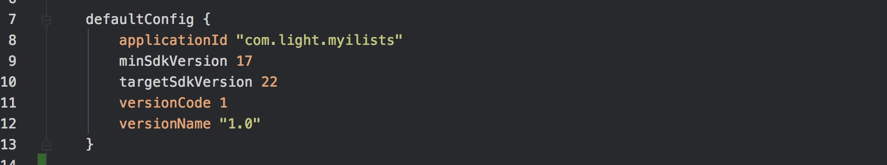
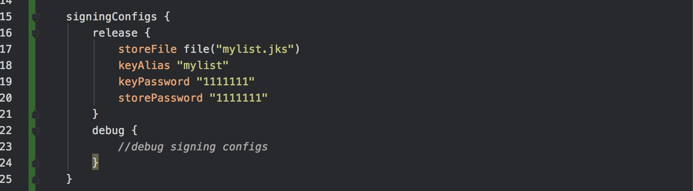
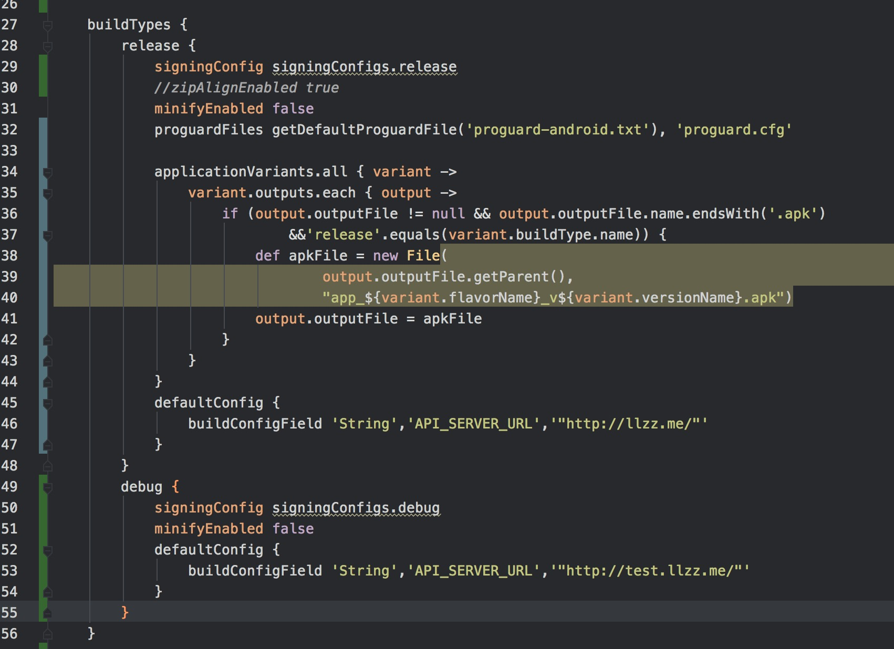
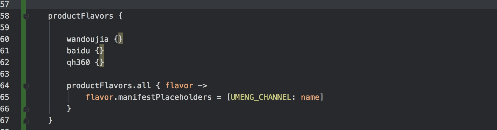
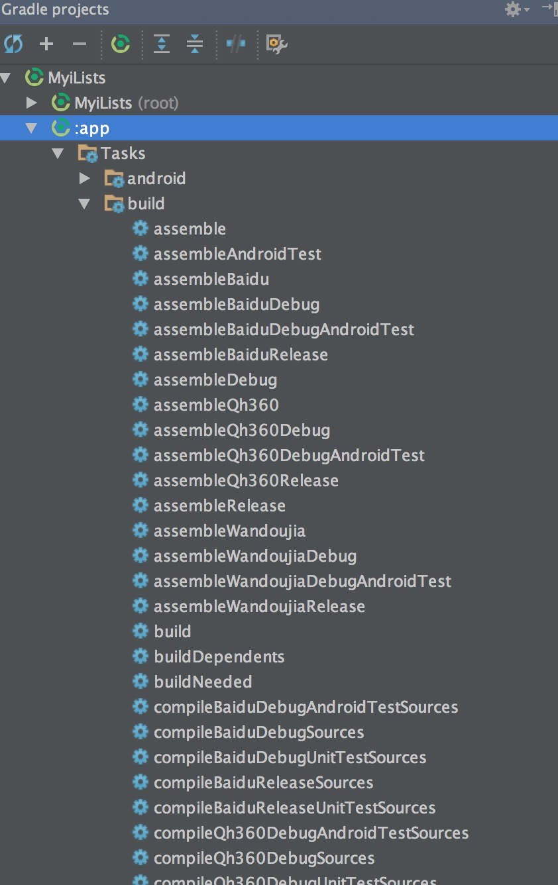

概述
其实我也没有深入的了解 Gradle，因为 Android Studio 使用的是它，build 的时候需要。所以很多常用的功能需要用到它。
Gradle 是项目自动化构建工具，Gradle Plugin User Guide 说到它的目标是：
- 让重用代码和资源变得更加容易
- 让创建同一应用程序的不同版本变得更加容易，无论是多个 APK 发布版本还是同一个应用的不同定制版本
- 让构建过程变得更加容易配置，扩展和定制
- 整合优秀的 IDE
这里稍微整理了下经常使用的功能。
Manifest 属性
- minSdkVersion
- targetSdkVersion
- versionCode
- versionName
- applicationId
- Package Name for the test application
- Instrumentation test runner

这些配置之前在 eclipse 中是在 Manifest 文件中有配置的，在 Android Stuido 生成的 Manifest 中没有了，都在 build.gradle(app) 中配置。
签名
签名需要如下内容：
- A keystore
- A keystore password
- A key alias name
- A key password
- The store type

debug 版本的这里没有进行配置，默认会有一个 debug.keystore。release 配置的时候，我以为直接在这里配置好后，会直接生成一个 keystore。但 build 的时候，是在 app/ 根目录下寻找，报了没找到的错误。只好手动生成了个 keystore 放在那。
如果你不愿意将 keyPassword 显示在这，或者不加入版本控制，可以在 gradle.properties 里面配置。
1 | KEYSTORE_PASSWORD=1111111 |
替换 signingConfigs 中的配置即可。
构建类型
默认情况下，buildTypes 里面会有 release 和 debug 两个版本。内容包括配置签名，混淆，更改其他配置等。

signingConfig signingConfigs.release 配置的是 release 签名，debug 的类似。
混淆
1 | minifyEnabled true |
新版本的只要将 minifyEnabled 设置为 true 就会开启混淆。proguard-android.txt 是在 SDK 路径下的默认文件，proguard.cfg 是自己新加的，和 eclipse 中一样。文件里面的内容可以找个模版。
更改 APK 文件名
1 | applicationVariants.all { variant -> |
输入的文件名 app_${variant.flavorName}_v${variant.versionName}.apk，包括了定制的 flavor 里面的名称和版本号。
BuildConfig
BuildConfig.java 是 Android Gradle 自动生成的一个文件，你可以通过 gradle 动态配置它的变量的值。可以设置 Log 在 debug 的时候显示，release 不显示。或者更改 release 和 debug 访问接口的网址。
1 | defaultConfig { |
在 release 和 debug 设置不同的 URL。在 BuildConfig.java 中就会生成这个变量。在使用 URL 的地方使用 BuildConfig.java 类就行。
多渠道打包
多渠道打包没有 ANT 中配置那么多，直接使用 productFlavors 属性就可以替换 UMENG_CHANNEL。

productFlavors.all 里面会循环替换 UMENG_CHANNEL。
生成 APK
生成 APK 可以使用 gradle 的命令执行。我是直接在 Android Studio 的 Gradle Project 面板生成的。

双击就可以生成，看目录就知道是可以单个生成的。APK 输出是在 app/build/outputs 目录。